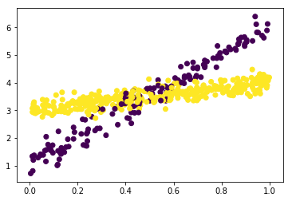
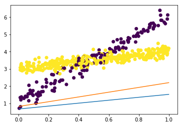

Edward stuff
Mixture of regressions
\[ y_i \sim \sum_K \pi_k N(\mu_k + x_i \beta_k, \sigma^2_k) \]
K = 2 N = 500 np.random.seed(0) x = np.random.uniform(size=N) z = np.random.uniform(size=N) < .7 w = np.where(z, 1, 5) w0 = np.where(z, 3, 1) sigma = np.where(z, .2, .3) y = x * w + w0 + np.random.normal(scale=sigma, size=N)
plt.clf() plt.scatter(x, y, c=z)
<matplotlib.collections.PathCollection at 0x7fea380ff438>

ds = tf.contrib.distributions class _MixtureRegressions(ds.Distribution): def __init__(self, pi, mu, sigma, validate_args=False, allow_nan_stats=False, name='MixtureRegressions'): parameters = locals() self.pi = tf.identity(pi) self.mu = tf.identity(mu) self.sigma = tf.identity(sigma) super(_MixtureRegressions, self).__init__( allow_nan_stats=allow_nan_stats, dtype=self.mu.dtype, graph_parents=[self.pi, self.mu, self.sigma], name=name, parameters=parameters, reparameterization_type=ds.FULLY_REPARAMETERIZED, validate_args=validate_args, ) def _log_prob(self, y): F = -.5 * (tf.log(2 * np.pi * tf.square(self.sigma)) - tf.square(y - self.mu) / tf.square(self.sigma)) F = self.pi * F return F def _sample_n(self, n): raise NotImplementedError class MixtureRegressions(ed.models.RandomVariable, _MixtureRegressions): def __init__(self, *args, **kwargs): ed.models.RandomVariable.__init__(self, *args, **kwargs)
x_ = tf.Variable(x.reshape(-1, 1).astype(np.float32), trainable=False) pi = ed.models.Dirichlet(tf.ones([K])) beta = ed.models.Normal(loc=tf.zeros([1, K]), scale=10 * tf.ones([1, K])) beta0 = ed.models.Normal(loc=tf.zeros([1, K]), scale=10 * tf.ones([1, K])) sigma_ = ed.models.InverseGamma(concentration=tf.ones([1, K]), rate=tf.ones([1, K])) mu = tf.matmul(x_, beta) + beta0 py = MixtureRegressions(pi, mu, sigma_, value=tf.zeros([N, 1]))
qbeta = ed.models.NormalWithSoftplusScale(loc=tf.Variable(tf.ones([1, K])), scale=tf.Variable(tf.zeros([1, K]))) qbeta0 = ed.models.NormalWithSoftplusScale(loc=tf.Variable(tf.ones([1, K])), scale=tf.Variable(tf.zeros([1, K]))) qsigma = ed.models.InverseGamma(concentration=tf.Variable(tf.ones([1, K])), rate=tf.Variable(tf.ones([1, K])))
inf = ed.KLqp(data={py: y.astype(np.float32).reshape(-1, 1)}, latent_vars={beta: qbeta, beta0: qbeta0, sigma_: qsigma})
inf.run()
res = ed.get_session().run([pi.mean(), qbeta.mean(), qbeta0.mean()])
plt.clf() plt.scatter(x, y, c=z) plt.plot([x.min(), x.max()], [res[1][0,0] * x.min() + res[2][0,0], res[1][0,0] * x.max() + res[2][0,0]]) plt.plot([x.min(), x.max()], [res[1][0,1] * x.min() + res[2][0,1], res[1][0,1] * x.max() + res[2][0,1]])
[<matplotlib.lines.Line2D at 0x7fea32c5ff98>]
